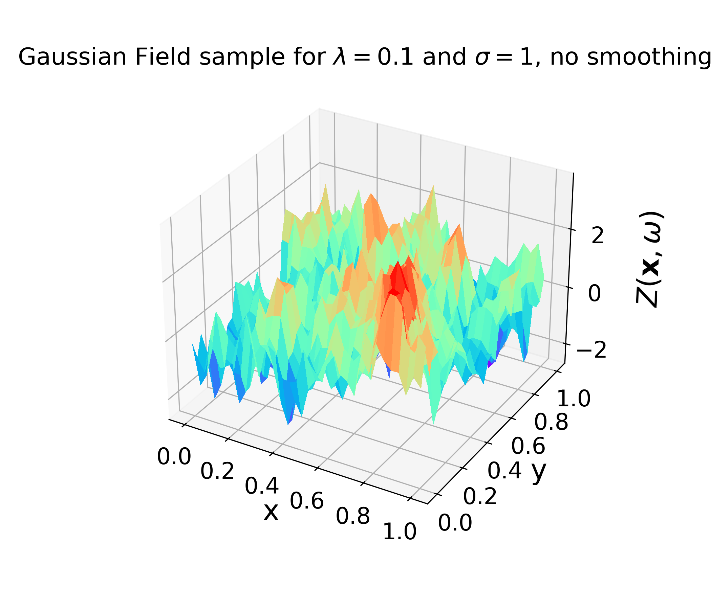
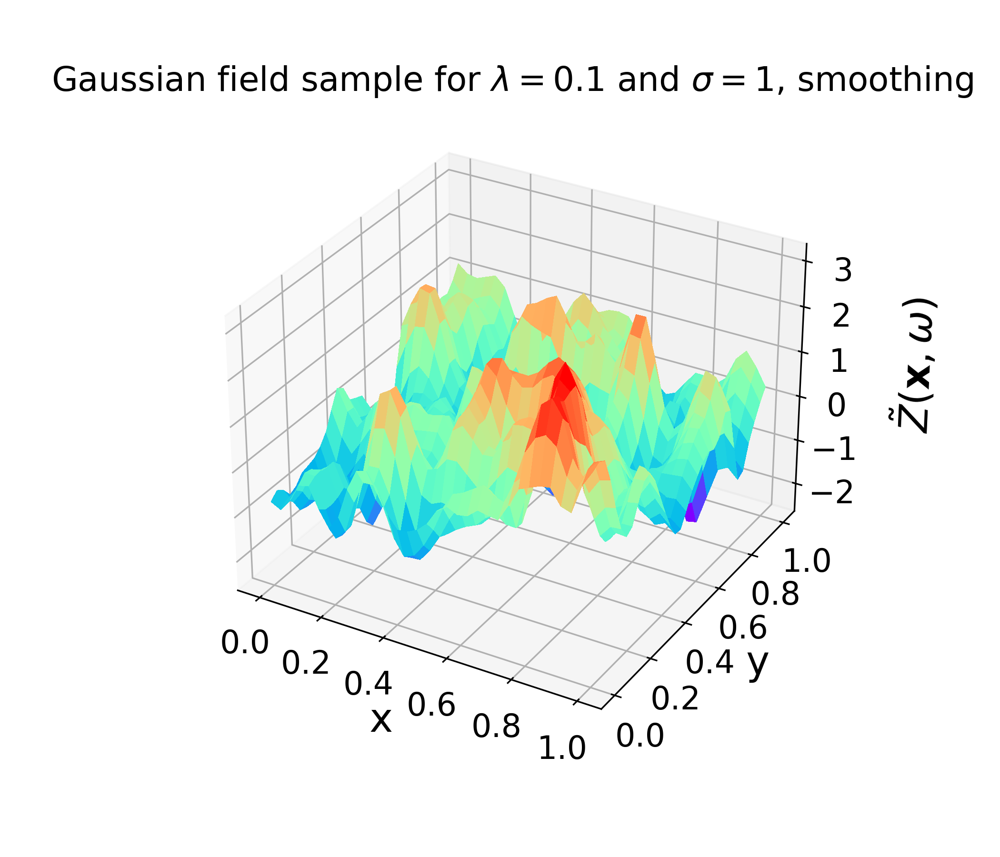
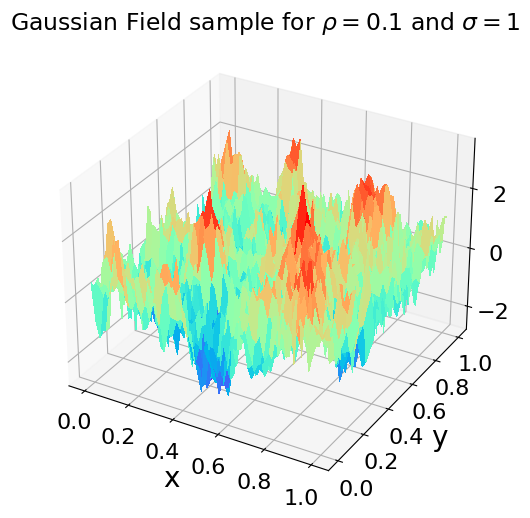
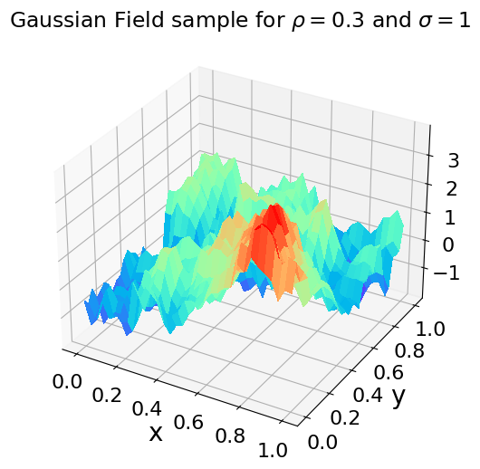

Selected research and computational projects spanning uncertainty quantification, numerical simulation, and quantum algorithms.
Smoothed Circulant Embedding
New random field sampling method enabling efficient uncertainty quantification via MLMC.
Level-Dependent Smoothness
Multilevel Monte Carlo methods for stochastic PDEs with varying regularity.
Tensor Factorisation
Factorisation method based on variational optimisation for high-dimensional tensors.
MLMC for Chaotic Systems
Exploring uncertainty quantification in chaotic systems via stochastic differential equations.
Radiative Transport MLMC
Variance reduction methods for radiative transport models with random input.
Model Selection by Simulation
Simulation-based methods for selecting statistical models with finance applications.
Simulating Quantum Annealing
Numerical simulations of quantum and thermal annealing optimisation methods.
Deep Learning for PDEs
Exploring neural network methods for solving boundary value problems.
Neural Network Approximation
Approximation of nonlinear functions using neural networks.
Smoothed Circulant Embedding
Read more about this here.
Introduced a method for obtaining a smooth approxmation of a random field sample and quantified the approximation error. Integrated this into multilevel Monte Carlo for elliptic PDEs with random coefficients, with applications in groundwater flow modelling.
Problem
Standard MLMC methods require the first-level approximation to be smooth enough to capture the bulk behaviour of the PDE solution. In many PDE models with random coefficients this assumption breaks down, leading to inefficient estimators.
Solution
Investigated a modified MLMC framework by adjusting the circulant embedding method to produce smooth approximations of samples from extremely oscillatory random fields, i.e. with small correlation length, high variance and low regularity.
Tools
Python • Scientific Computing • Random Fields • PDE modelling
Results
Derived error analysis and used it to inform the levels of regularity on each level. This work shows that the best choice of such a sequence is constant across levels, i.e. using the same regularity.


MLMC with Level-Dependent Smoothness
Read more about this in Chapter 4 of my PhD Thesis.
Investigated multilevel Monte Carlo methods for PDEs with random coefficients, varying the regularity of the random field across discretisation levels.


Problem
Standard MLMC methods require the first-level approximation to be smooth enough to capture the bulk behaviour of the PDE solution. In many PDE models with random coefficients this assumption breaks down, leading to inefficient estimators.
Solution
Investigated a modified MLMC framework incorporating a smoothing technique by exploting different regularities of the random field coefficient to control variance growth and improve estimator convergence.
Tools
Python • Scientific Computing • Random Fields • PDE Modelling
Results
Derived error analysis and used it to inform the levels of regularity on each MLMC level. This work shows that the best choice of such a sequence is constant across levels, i.e. using the same regularity.
Tensor factorisation
During my Riverlane internship, I implemented the method here.
Implemented the Double Factorisation Tensor HyperContraction (DFTHC) method for high-dimensional tensors in quantum chemistry.
Problem
Electronic structure problems are expressed through a Hamiltonian describing electron interactions given in the form of very-high dimensional tensors. Existing methods scale poorly with dimension and are computationally intractable.
Solution (as per Rubin et al.)
Implement a new Hamiltonian factorisation method that sits between double factorization and tensor hypercontraction. This gives a flexible trade-off between compression and circuit cost.
Tools
Python • JAX • Scientific Computing • Quantum Algorithms
Results
Wrote Python implementation of DFTHC algorithm and obtained cost savings of 4x - 195x for realistic molecular systems (e.g., iron-sulfur clusters and iron-molybdenum cofactor FeMoco).